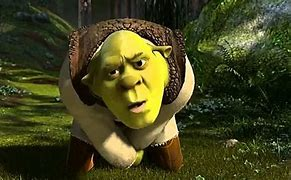

Bonjour je suis Simon GODARD passioné de Shrek depuis mon plus jeune âge. #FREESHREK
Shrek is an American media franchise of DreamWorks Animation, loosely based on William Steig 's 1990 picture book Shrek! The series primarily focuses on Shrek, a bad-tempered but good-hearted ogre, who begrudgingly accepts a quest to rescue a princess, resulting in him finding friends and going on many subsequent adventures in a fairy tale world.
